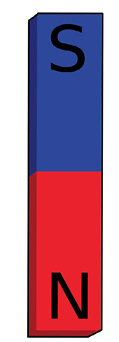

Magnetism
In this chapter, you will learn all about magnetism. You will investigate magnetic fields, and you will experiment to see which kinds of materials are magnetic.

Figure 1: The back of a speaker can be used to pick up certain items!
What is magnetism?
Some people use fridge magnets to keep notes or lists on the fridge's door. You even get magnets in the shape of words or letters that you can put on a fridge door to play with. The magnets make the letters stick to the metal of the fridge door.
Can you think of other ways in which magnets can help us in our daily lives?
In this chapter, you will learn about different types of magnets and how we use them in everyday life.
Magnetism is a force that can attract (bring closer) or repel (push away) objects that have a magnetic material like iron inside them.
Thousands of years ago, humans discovered that a certain type of rock could attract iron. This rock was called lodestone. People believed that it had magical powers! Pieces of lodestone would also push or pull other pieces of lodestone.
The ability to attract iron is called magnetism.
We now know that lodestone contains a material called magnetite, which is a kind of iron oxide. Iron oxides are chemical compounds of iron and oxygen. “Lodestone” is a natural magnet.

Figure 2: Lodestone attracts pieces of iron.
All magnets are able to attract other magnets or magnetic objects. Magnetic objects consist of iron or some other metals.
Experiment with a magnet to pick up paperclips. You will notice that if you hold the magnet far away, nothing happens. If you move the magnet closer to the paperclips, the paperclips will suddenly stick to the magnet.
Think about these questions:
- What is it
about a magnet that attracts these particular objects?
- Does a
magnet have to touch a magnetic object to attract it?
To find out more about magnetism, do the following investigation.
Action research
You need the following for this activity:
- a ruler,
- a paperclip, and
- at least three different kinds of magnets.
Put the ruler flat on your desk. Place a paperclip so that it is in line with the zero mark of the ruler. Put one magnet at the other end of the ruler. Slowly push the magnet toward the paperclip, as shown in the picture. The moment the paperclip moves towards the magnet, stop moving it.
Figure 3
Look at the measurement on the ruler to see how far apart the magnet and paperclip were when they came together.
Do this again with all of your magnets.
1. Fill in the table to show the distance at which each magnet attracted the paperclip.
|
Distance from paperclip |
|
|
Magnet 1 |
|
|
Magnet 2 |
|
|
Magnet 3 |
|
|
Magnet 4 |
2. Which magnet is the strongest?
3. Which magnet is the weakest?
What does this show us?
A magnet has an invisible magnetic field around it. The field is stronger close to the magnet, and weaker further away. The magnet does not affect the paperclip until the paperclip is close enough to be within this field.
Stronger magnets can attract magnetic materials from further away than weaker magnets can. This is because a stronger magnet has a larger magnetic field.
A few questions to answer
1. Name three situations in which you have seen or used magnets.
2. How would you find out if an object is magnetic or not?
3. You have two magnets, one is magnet A, which can attract a paperclip from10 cm away. The other magnet, magnet B, can attract a paperclip from 12 cm away. Which magnet is stronger? Explain your answer.
4. Why can a magnet have an effect on a paperclip from a distance? Explain it in your own words.
Permanent magnets and the magnetic fields
You have learnt that magnets can pull certain objects towards them because the objects have a magnetic field around them. An object that a magnet moves becomes a "temporary" magnet. A temporary magnet is not a magnet all the time. When you move the paperclip within the magnetic field of the magnet, the paperclip also becomes a magnet. The paperclip loses its magnetic field quickly.
The north pole of a magnet points to the Earth's magnetic north pole if it is allowed to swing freely on a thread.
Figure 4: The north pole of a magnet points to the Earth's magnetic north pole.
A permanent magnet keeps its magnetic properties for a long time. A temporary magnet acts as a magnet only as long as it is in the magnetic field of a permanent magnet.
A lodestone is a natural permanent magnet. You investigate permanent magnets that have been made artificially. These magnets have a north end and a south end, but they can come in different shapes. There are two basic shapes of magnets that you will use: bar magnets and horseshoe magnets.

Figure 5: Bar magnet
Figure 6: Horseshoe magnet
Bar magnets are rectangular, with a north pole on one end of the bar and a south pole on the opposite end of the bar. This means that the poles are far apart.
Horseshoe magnets also have a north and a south pole, but the bar has been bent into a curved shape. This bend brings the north and south poles closer together than they would be in a bar magnet.
Let us investigate what the north and south poles of the magnet mean.
Investigating magnet poles
For this investigation, you will need two bar magnets, with the north and south poles marked. Work in small groups.
1. Hold a bar magnet in one hand and put another bar magnet on your desk. Bring the north end of the magnet in your hand close to the north end of the magnet on the desk. Write down what happens when you bring the north poles of the two bar magnets closer together.

Figure 7
2. Now bring the south pole of one of the bar magnets close to the south pole of the other bar magnet. Write down what happens when you bring the south poles of the two bar magnets closer together.
Figure 8
3. Now bring the north end of one bar magnet close to the south pole of the other bar magnet. Write down what happens when you bring the north pole close to the south pole.
Figure 9
You should have noticed that as the north poles were brought together, there was a "resistance" to getting too close. This is why you found it difficult to get the north or south poles to touch each other. However, when you bring the north pole close to the south pole, they pull towards each other.
When the poles are the same, the force pushes them apart, but when the poles are different, the force pulls them together. So a north pole and a south pole attract each other, while a north and a north pole or a south and a south pole repel each other.
The magnetic field around each magnet has direction.
We say that unlike poles of a magnet attract each other and like poles repel each other.
Visualising magnetic fields (extension)
Although we cannot see magnetic fields, we can detect them using iron filings. Work in small groups to do this investigation.
You will need the following for this activity:
- two bar magnets,
- a piece of firm white paper, just bigger than the magnets, and
- iron filings.
Iron filings are tiny pieces of iron that look like a fine powder. Be careful- the filings will stick to the magnets, so you must make sure that you keep a piece of paper between the magnets and the filings at all times.
1. Put one of the bar magnets on the table in front of you.
2. Put the piece of white paper over the magnet.
3. Lightly draw the outline of the bar magnet on the paper, and mark the positions of the north and south poles.
4. Carefully sprinkle the iron filings onto the paper in the area of the magnet.
You should see the iron filings making a pattern around the magnet. Gently spread the iron filings around the magnet so that you can see the whole pattern. Notice the places where there are lots of iron filings very close together and the places where the iron filings are more spread out.
5. Use the space below to draw the pattern that the iron filings make.

The iron filings show you the pattern of the magnetic field. Each tiny piece of iron behaves like a magnet and lines up with the magnetic field around the bar magnet.
If you are not able to see the magnetic field pattern for yourself, here is a photograph of iron filings around one bar magnet:

Figure 10
To draw a magnetic field around a magnet, you use lines to represent the path of the iron filings. Figure 10 shows the lines. These are called magnetic field lines. The lines always have arrows that point from the north pole to the south pole.
Figure 11
Notice the following about the magnetic field lines in Figure 11:
- The field lines have arrows on them.
- The field lines come from the north pole and go to the south pole.
- The field lines are closer together at the poles.
- The magnetic field is stronger in the places where the lines are closer together.
- Further away from the magnet the lines get further and further apart, showing that the field is much weaker.
Now repeat the steps using two bar magnets with the north and south poles labelled. Put the north pole of one magnet close to the south pole of the other magnet. Put the paper over the magnets and sprinkle the iron filings on top of the paper.
6. Use field lines to draw the pattern you see. Draw the lines closer together where there are many iron filings and further apart where there are fewer.
Do your field lines look like those in Figure 9, where the magnets attract each other?
7. Now repeat the steps using the north pole of one magnet close to the north pole of the other magnet. Put the paper over the magnets and sprinkle the iron filings on top. Draw the pattern you see.
Do your field lines look like those in Figures 7 and 8, where the magnets repel each other?
Which substances will stick to a magnet?
Practical investigation
For this investigation, you will need the following:
- a bar magnet or a horseshoe magnet,
- pins,
- ceramic, such as a mug,
- iron nails,
- wood,
- plastic,
- copper,
- paper, and
- coins.
You will now find out which materials are attracted to magnets, and which materials are not.
1. Hold a magnet close to each of the objects in turn. The material will either be attracted to the magnet, or not. Put a tick in the column that matches what you see:
|
Material |
Attracted to magnet |
Not attracted to magnet |
|
pins |
||
|
ceramic |
||
|
iron nails |
||
|
wood |
||
|
plastic |
||
|
copper |
||
|
paper |
||
|
coins |
2. List the items that stuck to the magnet.
3. What do you notice about all of the items that did stick to the magnet?
4. Are all metals attracted to magnets?
Did you see that the materials that do not contain metal did not stick to the magnets? That means that non-metals are not highly magnetic substances. We say that they are not magnetic.
Did you see that the only things that were attracted to the magnet were metals? Does that mean that all metals are magnetic? You will investigate this further in the next chapter.
All substances are magnetic in some way. However, many substances have very weak forms of magnetism, so that there is not enough attraction to make them move towards a magnet. Strongly magnetic substances will stick to a magnet.
Next week
In the next chapter, you will learn how people use the property of magnetism in the recycling industry.